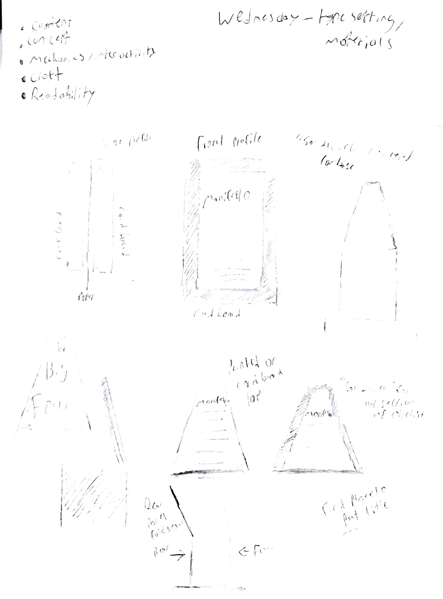
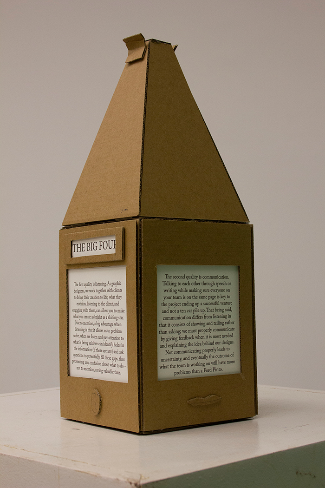
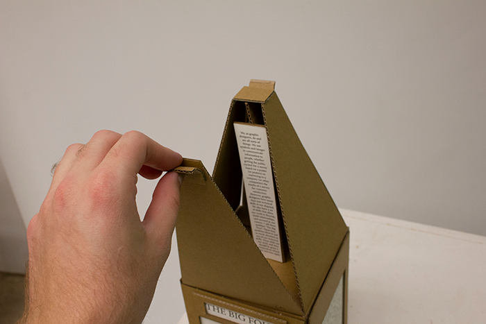
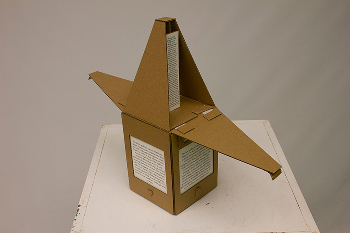

This was an obelisk I created to accompany a
video of a menifesto I wrote regarding the most
imporant qualities that a Graphic Designer should
possess. The front and rear sides of the top pyramid
section open up to reveal the last paragraphs of the manifesto.
The Ideation
I based the design of the manifesto on obelisks in which information was written on all sides. Originally, the obelisk was never meant to open up. However, this was changed to make the project more interactive than just turing the obelisk around.
The Finish Line
  The final obelisk design was constructed from
two layers of cardboard. I considered painting
the obelisk, but decided against it due to
concerns over how durable the cardboard was.